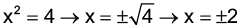
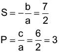

Introdução à unidade
Nesta unidade, retomamos o estudo de equações do 2.º grau. Veremos como resolver equações completas e incompletas do 2.º grau, bem como estudaremos a resolução de equações biquadradas e irracionais.
A seguir, relacionamos os objetivos que se pretende atingir ao estudar os conceitos desta unidade.
Capítulo 1 – Equações
Objetivos:
Capítulo 2 – Equações biquadradas e equações irracionais
Objetivos:
Probabilidade e Estatística – Pesquisa censitária e amostral
Objetivos:
Orientações específicas
Na abertura da unidade, utilizamos o exemplo das medidas de um terreno para mostrar a aplicabilidade de uma equação do 2.º grau. Como os alunos ainda não sabem resolver este tipo de equação, são dadas medidas diferentes para que eles verifiquem se estas podem ser as medidas do terreno comprado. Por meio da fórmula da área de um retângulo e conhecendo a diferença entre as medidas da frente do terreno e o seu comprimento, os alunos podem estimar o resultado. Após o estudo da resolução de equações completas do 2.º grau, pode-se retomar esta situação-problema e então encontrar as medidas do terreno por meio da resolução da equação.
|
Principais habilidades da BNCC |
EF09MA03, EF09MA04, EF09MA09, EF06MA21 |
|
Competências |
CE2, CE6, CE7, CG5, CG9, CG10 |
Neste capítulo, estudaremos como resolver equações do 2.º grau. No caso das equações do 2.º grau que são incompletas pode-se utilizar caminhos específicos para sua resolução. Porém, é importante que os alunos percebam que a fórmula geral serve para resolver todos os tipos de equações do 2.º grau.
Comente com os alunos que agora iremos retomar o estudo de equações de 2.º grau e que serão apresentadas as equações completas e incompletas. Verifique se são capazes de apresentar a diferença entre uma equação completa e incompleta. Neste momento, estamos promovendo uma discussão para verificar os conhecimentos prévios que os alunos possuem. Caso eles não apresentem as respostas esperadas, não se preocupe. Retome esta situação-problema após o estudo dos conceitos que serão apresentados na sequência.
Comente com os alunos que no Brasil, a fórmula geral de resolução também é conhecida como fórmula de Bhaskara. Nos outros países não há essa atribuição.
Encontre soluções
Atividade 1
2x + 1 = 0
2x = -1
m - 8 = 0
m = 8 S = {8}
y + 13 = 0
y = -13 S = {-13}
5t - 4 = 0
5t = 4
Atividade 2
Adicionando 1 a ambos
os membros temos:
x2 + 2x + 1 = 3 + 1
x2 + 2x + 1 = 4
(x + 1)2 = 4
Adicionando 4 a ambos
os membros temos:
x2 - 4x + 4 = 12 + 4
(x - 2)2 = 16

Atividade 3
Não apresenta raízes reais.
Não apresenta raízes reais.
Encontre soluções
Página 111
Atividade 4
x(x + 6) = 216
x2 + 6x - 216 = 0
(não convém)
As dimensões do terreno são 12 m por 18 m.
Atividade 5
(x + 2)(x + 3) = 156
x2 + 3x + 2x + 6 - 156 = 0
x2 + 5x - 150 = 0
(não convém)
A lateral da casa mede 10 m, logo seu perímetro é igual a 40 m.
Atividade 6

Não apresenta raízes reais.
Encontre soluções
Página 111
Atividade 7
Tempo: t
Velocidade: v
Ele gastou 12 horas.
Atividade 8
Idade de Júlia: x
x + 6 = (x - 6)2
x + 6 = x2 - 12x + 36
x2 - 12x + 36 - x - 6 = 0
x2 - 13x + 30 = 0
A idade atual de Júlia não pode ser 3 anos, pois não teríamos como comparar com a idade dela a 6 anos atrás. Portanto, Júlia tem 10 anos.
(não convém)
(não convém)
(não convém)
Atividade 5 – Jogo resta um
O jogo pedagógico é uma forma interessante de propor problemas, porque permite que os alunos desenvolvam sua criatividade, favorecendo a elaboração de estratégias para vencê-lo. Dessa forma, é estimulado o planejamento de ações que possibilitam uma atitude positiva perante o erro, uma vez que as situações ocorrem rapidamente e podem ser corrigidas de forma natural.
As atividades com jogos permitem a sociabilização entre os alunos, desenvolvem o espírito de equipe, a cooperação, o respeito ao trabalho e às limitações do outro. Ainda permite o desenvolvimento do senso crítico, do raciocínio, da reflexão, da sua autonomia que contribui de forma positiva para a construção da cidadania.
Para o jogo do resta um é necessário que as cartas sejam confeccionadas previamente. Informe aos alunos que elas se encontram no anexo do livro e deverão ser reproduzidas. Para cada grupo de 4 alunos é necessário um jogo de 32 cartas.
Ao iniciar o jogo, cada grupo deverá embaralhar suas cartas. Uma ficará fora do monte virada para baixo, pois os jogadores não poderão vê-la. Um deles irá distribuir as cartas para os demais. Este ficará com uma carta a menos.
Oriente os alunos para que verifiquem as cartas que têm na mão e se estas formam pares (eles deverão baixar esses pares sobre a mesa). Explique que os pares são formados por: uma carta com uma equação do 2.º grau; e a outra, que apresenta as raízes dessa equação. O objetivo é que os alunos utilizem a relação de soma e de produto para calcular as raízes das equações. Lembrando que em todas as equações apresentadas o coeficiente a é sempre igual a 1.
É importante que os grupos estejam organizados em círculos e que o jogador que distribui as cartas seja identificado como sendo o número 1. O da esquerda será o número 2; na sequência o 3 e o 4.
Assim, o número 1 (quem inicia o jogo) retira uma carta do número 2 que estará a sua esquerda. Na sequência, o número 3 deverá retirar uma carta do maço do número 2. Continuando a rodada, o número 4 retirará uma carta do maço do aluno que representa o número 3, o número 1 fará o mesmo com o número 4 e assim sucessivamente até um dos alunos do grupo ficar com uma carta.
|
Principais habilidades da BNCC |
EF09MA03, EF09MA04, EF09MA09, EF06MA21 |
|
Competências |
CE2, CE6, CE7, CG5, CG9, CG10 |
Neste capítulo, estudaremos dois tipos de equações diferentes. As equações biquadradas que para serem resolvidas substituímos x4 por y2, recaindo assim em uma equação do 2.º grau, e as equações irracionais que possuem a incógnita no radicando. Lembre aos alunos a importância de se fazer a verificação dos valores encontrados na resolução da equação irracional, tendo em vista que nem sempre esses valores servem como resposta.
Encontre soluções
Atividade 1
x2 = y
y2 - 26y + 25 = 0
y’ = 25 e y” = 1
Para y = 25, temos:
Para y = 1, temos:
S = {-1, -5, 1, 5}
x2 = y
y2 - 49y = 0
y(y - 49) = 0
y = 0 ou
y - 49 = 0
y = 49
Para y = 0, temos x = 0.
Para y = 49, temos:
S = {0, -7, 7}
x2 = y
y2 - 9y + 36 = 0
Δ = b2 - 4ac = 81 - 144 = -63
Não apresenta raízes reais.
x2 = y
3y2 - 10y - 8 = 0
Δ = b2 - 4ac = 100 + 96 = 196
Para y = 4, temos: 
Para , temos: → Não há um número real que elevado ao quadrado resulte em um número negativo.
S = {-2, 2}
x4 - 169x2 = 0
x2 = y
y2 - 169y = 0
y(y - 169) = 0
y = 0 ou
y - 169 = 0
y = 169
Para y = 0, temos x = 0.
Para y = 169, temos:
S = {0, -13, 13}
x2 = y
y2 + 4y + 8 = 0
Δ = b2 - 4ac = 16 - 32 = -16
Não apresenta raízes reais.

Encontre soluções
Atividade 1
Verificação:

x2 - 4x - 5 = 0
x’ = -1 e x” = 5
S = {5}
Verificação:
Para x = -1, temos
Para x = 5, temos
Verificação:
Atividade 2
Verificação:
Para x = 1, temos:
Para x = 6, temos:
(falsa)
(verdadeira)
(verdadeira)
Comente com os alunos que a educação pública de qualidade é um direito fundamental arrazoado na Constituição da República Federativa do Brasil de 1988 e, por isso, faz parte do patrimônio jurídico de cada cidadão brasileiro, além de, e principalmente, ser um dever objetivo do Estado.
Três premissas fazem parte do Artigo 26° da Declaração Universal dos Direitos Humanos (DUDH). A primeira delas diz que “Toda a pessoa tem direito à educação. A educação deve ser gratuita, pelo menos a correspondente ao ensino elementar fundamental. O ensino elementar é obrigatório. O ensino técnico e profissional dever ser generalizado; o acesso aos estudos superiores deve estar aberto a todos em plena igualdade, em função do seu mérito”.
Outra premissa diz que “a educação deve visar à plena expansão da personalidade humana e ao reforço dos direitos do homem e das liberdades fundamentais e deve favorecer a compreensão, a tolerância e a amizade entre todas as nações e todos os grupos raciais ou religiosos, bem como o desenvolvimento das atividades das Nações Unidas para a manutenção da paz”. A terceira afirma que “aos pais pertence a prioridade do direito de escolher o gênero de educação a dar aos filhos”.
Fonte: BRASIL. Ministério da Mulher, da Família e dos Direitos Humanos. Disponível em: https://www.gov.br/mdh/pt-br/assuntos/noticias/2018/dezembro/artigo-26deg-direito-a-educacao. Acesso em: 4 jul. 2022.
(verdadeira)
(falsa)
(falsa)
(verdadeira)
Relembre
Atividade 1
2x2 - 3px + 40 = 0
2 ∙ (8)2 - 3p ∙ 8 + 40 = 0
128 - 24p + 40 = 0
-24p = -128 - 40
-24p = -168
p = 7
Atividade 3
ax2 - 4x - 16 = 0
16a - 16 - 16 = 0
16a = 32
a = 2
2x2 - 4x - 16 = 0 : (2)
x2 - 2x - 8 = 0
Atividade 4
Verificação:
Atividade 5
(12 + 2x)(10 + 2x) = 288
120 + 24x + 20x + 4x2 = 288
4x2 + 44x + 120 - 288 = 0
4x2 + 44x - 168 = 0 : (4)
x2 + 11x - 42 = 0
S = -11 e P = -42
xʹ = -14 e xʹʹ = 3 (não serve)
A largura da calçada será igual a 3 m.
Atividade 6

Atividade 7
Atividade 8
A equação possui uma única raiz.
Atividade 9
q4 - 13q2 + 36 = 0
q2 = x
x2 - 13x + 36 = 0
S = {-3, -2, 2, 3}
x = 9 x = 4
q2 = x q2 = x
q2 = 9 q2 = 4
q = ±3 q = ±2
Atividade 10
S = {7}
Verificação
Atividade 11

Atividade 13
Uma das soluções da equação
é um número inteiro múltiplo de 11.
Atividade 14
Atividade 15
y’=3 (satisfaz a equação)
y”=9 (não satisfaz a equação)
S= {3}
Atividade 18
x2 = y
y2 - 144 = 0
y2 = 144
S =
x4 = y
y2 - 64y = 0
y(y - 64) = 0
y = 0
y = 64
S = {-8, 0, 8}
x2 = y
y2 - 26y + 25 = 0
y’ = 25 e y” = 1
S = {-5, -1, 1, 5}